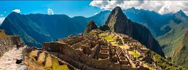

Viajar al Perú es despertar sueños pendientes , es conectarse con uno mismo, es adentrarse en 5 mil años de historia
viva. Prepárate para dominar olas sobre caballitos de totora, tablas de surf y disfrutar de puestas del sol
en oasis con protectoras dunas. En la sierra, con el sonido de quenas en el viento, respirarás el aire puro
de los Andes y contemplarás con devoción la armonía del hombre con la naturaleza en Machu Picchu. En la selva,
el río Amazonas te dará la bienvenida con delfines rosados y te invitará a bailar, a ser libre. Recorrer
las regiones del Perú es disfrutar de una gastronomía mestiza, única y reconocida en el mundo. Si el corazón
te dice que sí, atrévete a visitarlo. En los diversos ríos de menor grado de dificultad, donde se practica
también el canotaje o rafting, se puede navegar kayaks, especialmente en apacibles lagunas que encontramos
en las diversas regiones del país, con adecuados servicios que permiten alquilar las embarcaciones. Se desconoce
el origen exacto del kayak, pero la embarcación se emplea como medio de transporte en pueblos nórdicos. Según
algunos historiadores, kayak significa
"ropa para andar en el agua" u "hombre-barca", debido a la peculiaridad de la nave donde cabe una
sola persona, en la gran mayoría de casos. La práctica del kayak demanda una pericia básica de control de
la nave, que depende del equilibrio. Es importante dominar técnicas de natación ante cualquier percance que
pueda surgir en pleno trayecto de la travesía. En Perú el kayak puede practicarse a la perfección en bahías
o lagunas de la costa, sierra y selva. Practicar caminata o trekking en el Perú es trasladarse por hermosos
parajes andinos con fantásticas vistas de nevados y lagunas. Es recorrer el Qhapaq Ñan, la red de caminos
que unía.

Imperio inca ; conocer la cultura de las comunidades; atravesar las cordilleras Blanca y Huayhuash
en Áncash o encontrar más de una ruta hacia Machu Picchu en Cusco. Aquí destacamos solo algunos de esos lugares
y experiencias mágicas que es imposible dejar de vivir y conocer en una travesía por el país Ramón Castilla
y Marquesado, Presidente de la República entre 1845-1851 y 1855-1862. Hijo del bonaerense Pedro de Castilla
y de Juana Marquesado Romero, tarapaqueña con sangre india, Ramón Castilla nació el 30 de agosto de 1797.
Durante su niñez, según Clemente Markham, trabajó como leñador al servicio de su padre e hizo viajes al desierto
para recoger los pedazos de leña que caían de los algarrobos. Pasó a Chile e ingresó al regimiento realista
Dragones de la Frontera, con el que combatió a los patriotas en Concepción, Talcahuano, Chillan y Rancagua,
cayendo prisionero en la batalla de Chacabuco (enero de 1817) y trasladado a Buenos Aires. Obtenida su liberación,
pasó a Río de Janeiro y emprendió, en compañía del coronel español Fernando Cacho, su retorno al Perú (diciembre
de 1817) vía el Mato-Grosso. Pasó por Chiquitos, Santa Cruz de la Sierra, Valle Grande, Chuquisaca, Oruro,
La Paz, Puno, Cuzco, Huamanga, Huancavelica, Lunahuaná y Lurín hasta llegar a Lima; atravesando en total
leguas de selva, sierra y arenal. Ya en la capital (octubre de 1818), el virrey Joaquín de la Pezuela lo
destinó al regimiento Dragones de la Unión, acantonado en Arequipa; sin embargo, fue en ese entonces que
abandonó su postura realista y se presentó en Lima ante Torre Tagle y luego ante el Libertador José de San
Martín (febrero de 1822). Luego de una serie de pruebas e interrogatorios fue incorporado a los Húsares de
la Legión Peruana como alférez de caballería. No asistió a la batalla de Junín por pertenecer al estado mayor
patriota, pero sí a la de Ayacucho (9 de diciembre de 1824), donde resultó herid Al asumir el gobierno en
1845, Castilla encontró un país desordenado debido a las luchas entre caudillos militares, y una economía
que podía recuperarse gracias a los ingresos por la venta del guano en Europa. Por ello, la época que su
gobierno inauguró ha sido denominada la del “apogeo” o “prosperidad falaz”, ya que los ingresos obtenidos
por la venta del excremento de aves de nuestro litoral permitió la ejecución de numerosas obras públicas
y una relativa calma política. En efecto, Castilla y sus asesores quisieron ordenar el país. En el aspecto
económico inauguró el sistema de las consignaciones para la venta del guano entregando casi la totalidad
de este negocio a la casa británica Gibbs, implantó el primer presupuesto de la República, creó la ley de
la “consolidación de la deuda interna” para cancelar los gastos de peruanos en favor de las guerras de la
independencia, arregló la deuda externa con Inglaterra, Estados Unidos y Chile, excepto la “deuda de la independencia”
con España y permitió la llegada de trabajadores chinos, los coolíes para las plantaciones de la costa y
la extracción del guano en las islas de Chincha.